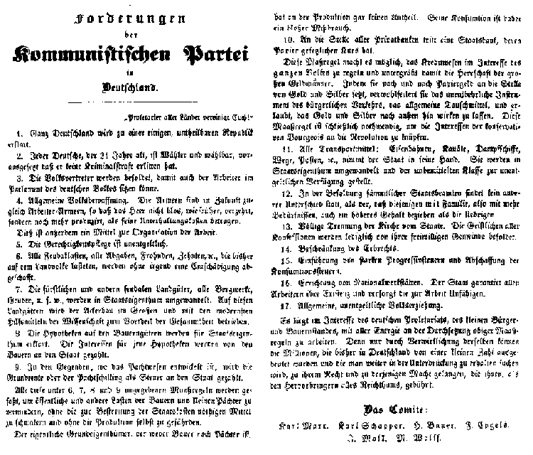

Karl Marx and Frederick Engels 1848
Source: MECW Volume 7, p. 3;
Written: between March 21 and 24, 1848;
First published: as a leaflet in Paris on March 24 or 25, 1848, in the supplement to the Berliner Zeitungs-Halle, on April 5, 1848, and in a number of other German newspapers; it was repeatedly reprinted during the revolution and after its defeat, in particular as a leaflet in Cologne issued not later than September 10, 1848.
“Workers of all countries, unite!”
1. The whole of Germany shall be declared a single and indivisible republic.
2. Every German, having reached the age of 21, shall have the right to vote and to be elected, provided he has not been convicted of a criminal offence.
3. Representatives of the people shall receive payment so that workers, too, shall be able to become members of the German parliament.
4. Universal arming of the people. In future the armies shall be simultaneously labour armies, so that the troops shall not, as formerly, merely consume, but shall produce more than is necessary for their upkeep.
This will moreover be conducive to the organisation of labour.
5. Legal services shall be free of charge.
6. All feudal obligations, dues, corvées, tithes etc., which have hitherto weighed upon the rural population, shall be abolished without compensation.
7. Princely and other feudal estates, together with mines, pits, and so forth, shall become the property of the state. The estates shall be cultivated on a large scale and with the most up-to-date scientific devices in the interests of the whole of society.
8. Mortgages on peasant lands shall be declared the property of the state. Interest on such mortgages shall be paid by the peasants to the state.
9. In localities where the tenant system is developed, the land rent or the quit-rent shall be paid to the state as a tax.
The measures specified in Nos. 6, 7, 8 and 9 are to be adopted in order to reduce the communal and other burdens hitherto imposed upon the peasants and small tenant farmers without curtailing the means available for defraying state expenses and without imperilling production.
The landowner in the strict sense, who is neither a peasant nor a tenant farmer, has no share in production. Consumption on his part is, therefore, nothing but abuse.
10. A state bank, whose paper issues are legal tender, shall replace all private banks.
This measure will make it possible to regulate the credit system in the interest of the people as a whole, and will thus undermine the dominion of the big financial magnates. Further, by gradually substituting paper money for gold and silver coin, the universal means of exchange (that indispensable prerequisite of bourgeois trade and commerce) will be cheapened, and gold and silver will be set free for use in foreign trade. Finally, this measure is necessary in order to bind the interests of the conservative bourgeoisie to the Government.
11. All the means of transport, railways, canals, steamships, roads, the posts etc. shall be taken over by the state. They shall become the property of the state and shall be placed free at the disposal of the impecunious classes.
12. All civil servants shall receive the same salary, the only exception being that civil servants who have a family to support and who therefore have greater requirements, shall receive a higher salary.
13. Complete separation of Church and State. The clergy of every denomination shall be paid only by the voluntary contributions of their congregations.
14. The right of inheritance to be curtailed.
15. The introduction of steeply graduated taxes, and the abolition of taxes on articles of consumption.
16. Inauguration of national workshops. The state guarantees a livelihood to all workers and provides for those who are incapacitated for work.
17. Universal and free education of the people.
It is to the interest of the German proletariat, the petty bourgeoisie and the small peasants to support these demands with all possible energy. Only by the realisation of these demands will the millions in Germany, who have hitherto been exploited by a handful of persons and whom the exploiters would like to keep in further subjection, win the rights and attain to that power to which they are entitled as the producers of all wealth.
The Committee:
Karl Marx, Karl Schapper, H. Bauer, F. Engels, J. Moll, W. Wolff
{kind=link}